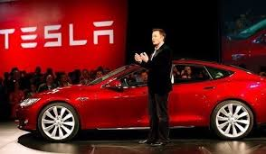

"Çalışmak için kullanma kılavuza ihtiyaç duyan her ürün bozuktur"
21.yüzyılın teknoloji alanında en başarılı iş adamlarından biri olan Elon Musk planladığı projelerle de adından sıkça söz ettirmeyi başarıyor. İşte Elon Musk'ın devrim yaratacak projeleri...
Elon Musk 1971 yılında Güney Afrika'da doğuyor, kendi kendine program kodlamayı öğrenerek 12 yaşında bir bilgisayar oyunu tasarlıyor. Ekonomi alanında lisans diploması ve fizik alanında yandal diploması bulunuyor. Kardeşi ile birlikte özel bir yazılım geliştirerek 1999 yılında Altavista'ya satıyor, böylece büyük bir gelir kaynağı elde etmiş oluyor. Aynı yıl X.com sitesini kuruyor ve Paypal'ın kurucu ortağı oluyor. Adının en çok duyulduğu ve uzay araştırmalarının yapıldığı SpaceX şirketini ise 2002 yılında kuruyor.
Mars'ı Kolonileştirme Projesi
Elon Musk'ın çılgın projeleri ise bu şirket ile hayat bulmaya başlıyor. ISS’e (uluslararası uzay istasyonu) araç göndererek çalışmalar yapan ilk şirket. Musk çalışmalarını Mars'ta hayat kurmak ve koloni oluşturmak üzerine devam ettiriyor. SpaceX bünyesinde Mars'a gidip dönebilen bir uzay aracı üretmek için çalışıyor ve bu Mars'ta koloni kurmak için ilk büyük adım oluyor. Şimdilerde NASA için çalışan bu şirket Mars'a güvenli ve düzenli bir şekilde yolcu taşımaya başlayana dek çalışmalarına devam edecek gibi gözüküyor. Hedefleri ise 2040 yılında Mars üzerinde oldukça büyük bir insan kolonisi oluşturmak.